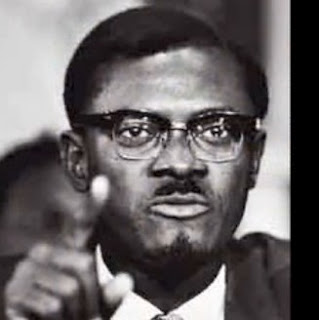
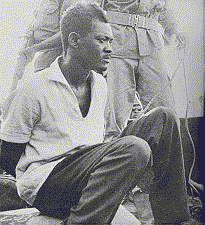

Marxists Internet Archive - Sección en Español
Patrice Lumumba
1925-1961
Biografia
Patrice Émery Lumumba nació en el territorio de Katako-Kombe en el Sankuru, en el Congo Belga (actual República Democrática del Congo). Trabajó como empleado de oficina en una sociedad minera de la provincia de Kivu del Sur hasta 1945, después como periodista en Léopoldville (hoy Kinshasa) y Stanleyville (Kisangani), período durante el cual escribió en varios periódicos. En septiembre de 1954 recibe su carta «de matriculado», honor raramente concedido por la administración belga a algunos negros (apenas 200 de los 13 millones de habitantes de la época) y en 1955 crea una asociación llamada APIC (Asociación del Personal Indígena de la Colonia).
En 1958 crea el Movimiento Nacional Congolés (MNC), en Léopoldville (actual Kinshasa), el 5 de octubre de 1958, y con tal nombre, participa en la Conferencia Panafricana de Accra. Consigue organizar una reunión para dar cuenta de dicha conferencia durante la cual reivindica la independencia delante de más de 10,000 personas. Despues de dos anos de lucha politica por la independencia, Bélgica le concede de modo sorpresivo la independencia al Congo hecha efectiva el 30 de junio de 1960.
El MNC y sus aliados ganan las elecciones organizadas en mayo y, el 23 de junio de 1960, Patrice Lumumba se convierte en el primer Primer Ministro del Congo independiente. La alegria de la fecha es, sin embargo, empanada por el hecho de que la independencia del Congo esta ligada a la condición de que el Congo herede la deuda externa de Bélgica, con lo cual el joven país nace sumido en en una crisis económica y teniendo que devolver un préstamo que jamás recibió.
Por otro lado, buena parte de la administración y de los cuadros del ejército se mantiene belga, por lo cual Lumumba decreta la africanización del ejército y la tropa se rebela en contra de sus oficiales y del estado mayor. El desorden resultante, da paso a graves actos de violencia. El imperialismo belga y norteamericano, mientras tanto, interesados en mantener acceso a la riqueza mineral del país, promueven la escición de la provincias de Katanga y Kasai del Sur. Lumumba responde con obtener el apoyo de la URSS. La ONU envia tropas en un intento de apaciguar la crisis.
En septiembre el presidente congoleño, J. Kasavubu, busca destituir ilegalmente a Lumumba del puesto de Primer Ministro. Lumumba recibe el apoyo del parlamento, quien ordena la dimisión de Kasavubu, pero el ejército lanza un golpe militar el 14 de septiembre y es Lumumba quien es puesto en arresto domiciliario bajo custodia de tropas de la ONU.
Al poco tiempo, Lumumba logra huir y la CIA norteamericana ordena su asesinato. Perseguidos por los militares locales y belgas, y la CIA, Lumumba y sus ministros son detenidos en la localidad de Mweka el 1ro de diciembre de 1960. El 17 de enero de 1961 fue transferido, maniatado, amordazado y sangrando por las golpizas sufridas, a la provincia de Katanga, entonces indirectamente bajo control belga. Esa noche, Lumumba y sus companeros fueron fusilados en presencia de autoridades militares congoleñas y sus asesores belgas y norteamericanos, y sus restos supuestamente despedazados y disueltose en acido sulfurico.
Patrice Émery Lumumba fue el único jefe de estado libremente elegido en la RDC hasta el año 2006.
Obras
1960: Discurso en la ceremonia de proclamación de la Independencia del Congo